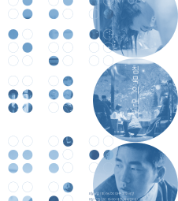

A cinematic gaze
영화로운 시선은 영화의전당과 부산국제영화제의 협업으로 탄생한 '시민평론단'에게 영화에 관한 자유로운 비평글을 기고할 수 있도록 마련된 공간입니다.
부산 시민들이 영화 비평에 능동적으로 참여할 수 있는 계기를 마련하여 활발한 문화적 담론을 형성하고자 합니다.
매월 개봉하는 대중영화와 한국독립영화를 바탕으로 게시되며, 영화를 보는 관객들에게 다채로운 관점을 제시하고자 합니다.
more view불안의 소리들을 넘어서
<둠둠>
2022 - 09 - 22
<성적표의 김민영>
: 삼행시를 닮은 영화
2022 - 09 - 19
사랑, 인생, 예술의 삼위일체
- <작은새와 돼지씨>
2022 - 09 - 02

오렌지필름 <침묵의 언어>
- 소수의 언어
2022 - 08 - 29